SLYR Tools
Before you start
Here is a checklist to help your conversions and workings with SLYR run a little bit smoother.
✔️ Populate settings requirements: set-up the SLYR Options following these guidelines.
✔️ Set up your folders: SLYR will record the pathways from the original data locations, so there is no need to have a special set-up. However, you may want to set-up a structure so you can keep outputs tidy.
✔️ Access to files: ensure you have access to bespoke files such .svg, fonts, and images. Note that there is some limitations with QGIS Svg files.
✔️ Geopackages: ArcGIS Pro and Geopackages has not yet reached full support. Therefore an error will be produced if you are exporting from a geopackage.
Warning: Railway: Converting .gpkg layers is not yet fully supported, layer path has been replaced with a dummy shapefile path.
- See Troubleshooting for the workaround.
✔️ Symbology: If you are using rule-based renderers, these are not yet available in ArcGIS Pro. See the Limitations.
✔️ Error Messages: If a tool returns an error: - Saying it is not available, if you are using the Community Edition, it may not yet be available. - All other errors, read through the
Log, check the Troubleshooting page on how to recitfy the issue and rerun the tool. If there is no recitifcation, please email us.
INCOMPLETE Annotations ## *this is currently not working THINKING IT MAY ONLY WORK FROM ARCMAP and NOT ArcGIS Pro**
ArcGIS Pro
Convert APRX to QGS
| From | To |
|---|---|
| ESRI .aprx | QGIS .qgs, .qgz |
Converts an APRX document file to a QGS project file.
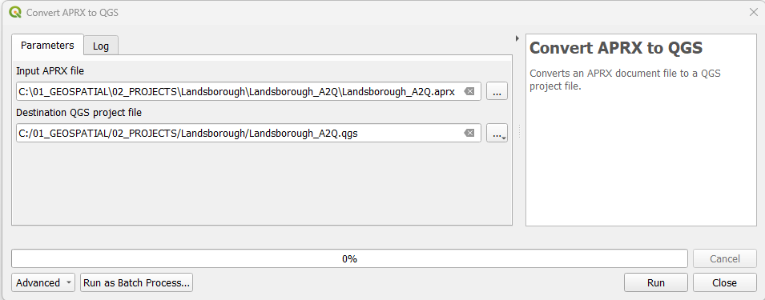
1. In the QGIS Processing Toolbox Click on SLYR ▶️ ArcGIS Pro ▶️ Convert APRX to QGS.
2. In the Input APRX file, browse to the location of the .arpx file.
3. Under Destination QGS project file, set the location of the .qgs file.
4. Click Run.
5. Once processed, in QGIS, navigate to the folder and open the .qgs file.
This tool is available only with the SLYR full licence.
Convert QGS to APRX
| From | To |
|---|---|
| QGIS .qgs, .qgz | ESRI .aprx |
Converts a QGIS project file to an APRX file.
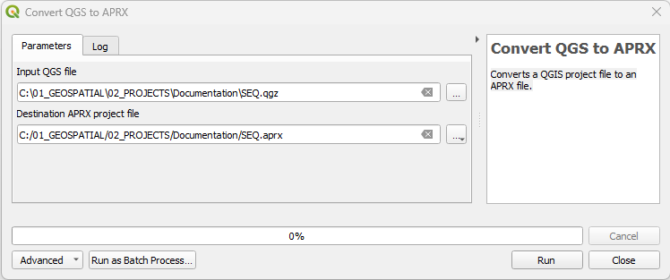
- In the QGIS
Processing ToolboxClick onSLYR▶️ArcGIS Pro▶️Convert APRX to QGS. - In the
Input QGS file, browse to the location of the .qgz file. - Under
Destination APRX project file, set the location of the .aprx file.
Current limitations with geopackages
warnings: Warning: Rail Stations: Converting .gpkg layers is not yet fully supported, layer path has been replaced with a dummy shapefile pathIn ArcGIS Pro, this will require each layer to be repathed. However, if you undertake this in theMap view, the style will be lost. To keep a layer's style, use theUpdate Data Sources' tool in theCatalog` viewThis tool is available only with the SLYR full licence.
Convert GPL color palette to STYLX
| From | To |
|---|---|
| .gpl | ESRI .stylx |
GPL color palettes can be created in graphics programs such as GIMP and Inkscape and are useful for carefully curated palettes. SLYR converts it into a ArcGIS Pro .stylx format that can then be imported into your ArcGIS Pro styles.
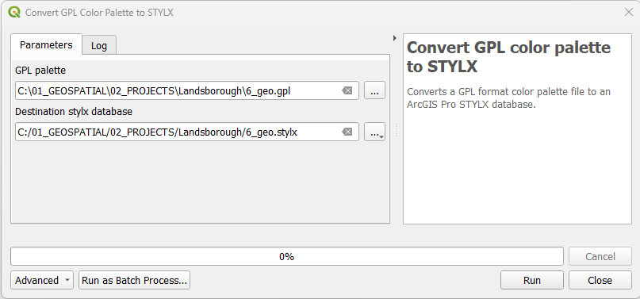
1. In the QGIS Processing Toolbox Click on SLYR ▶️ ArcGIS Pro ▶️ Convert GPL color palette to STYLX.
2. Under the GPL palette, browse to the location of the .gpl file.
3. Under Destination stylx database, set the location of the .X file.
4. In ArcGIS Pro, in the Catalog panel, right mouse click on the .stylx file and select Add Style.
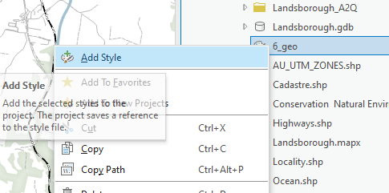
- In
Geoprocessing,
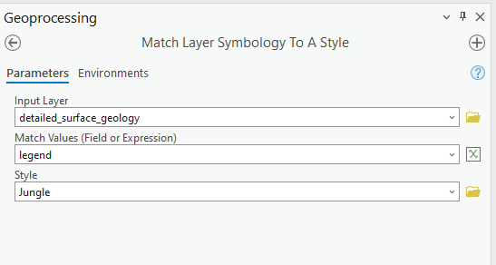
This tool is available only with the SLYR full licence.
Convert layer to LYRX
| From | To |
|---|---|
| QGIS layer | ESRI .lyrx |
Once you have set up your symbology on your layer, SLYR will extract the symbology out from the layer and convert it to a ArcGIS Pro LYRX file that can be applied to data in ArcGIS Pro.
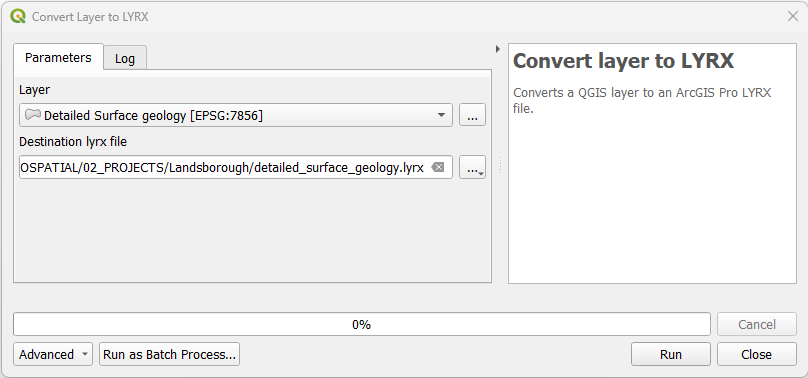
1. In QGIS, ensure the layer containing the symbology for exporting is loaded.
2. In the Processing Toolbox Click on SLYR ▶️ ArcGIS Pro ▶️ Convert layer to LYRX.
3. Under Layer, select the layer.
4. Under Destination lyrx file, set the location of the .lyrx file.
5. Click Run.
6. Once processed, in ArcGIS Pro, navigate via the Catalog and open the .lyrx file.
This tool is available only with the SLYR full licence.
Convert LYRX to QLR
| From | To |
|---|---|
| ESRI .lyrx | QGIS .qlr |
Converts an ArcGIS Pro LYRX file to a QGIS QLR file. Both of these files act similarly and will reach back to the original data file.
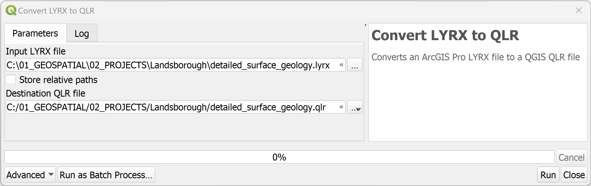
1. In the QGIS Processing Toolbox Click on SLYR ▶️ ArcGIS Pro ▶️ Convert LYRX to QLR.
2. In the Input LYRX file, browse to the location of the .lyrx file.
3. Choose to store relative paths - this will impact on the performance of the QLR if the data is removed from the specified location.
4. Under Destination QLR file, set the location of the .qlr file.
5. Click Run
6. Once processed, you can drag and drop the .qlr file from the QGIS Browser into your map.
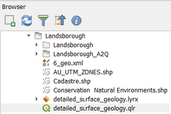
This tool is available only with the SLYR full licence.
Convert LYRX to QML
| From | To |
|---|---|
| ESRI .lyrx | QGIS .qml |
Converts an ArcGIS Pro LYRX file to a QGIS QML file. If multiple layers are present in the LYRX file, each will be converted to an individual QML file.
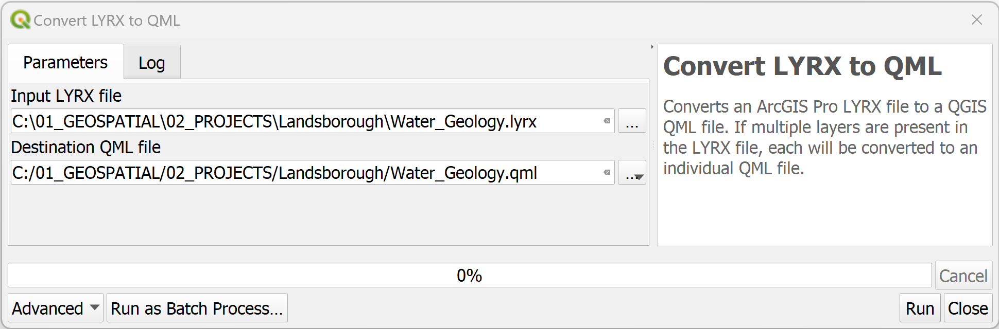
- In the QGIS
Processing ToolboxClick onSLYR▶️ArcGIS Pro▶️Convert LYRX to QML. - In the
Input LYRX file, browse to the location of the .lyrx file. -
Under
Destination QML file, set the location of the .qml file. > If more than one layer exists in the lyrx file, a qml will be produced for each >
-
Once processed, load the .qml files via the
Layer Properties.
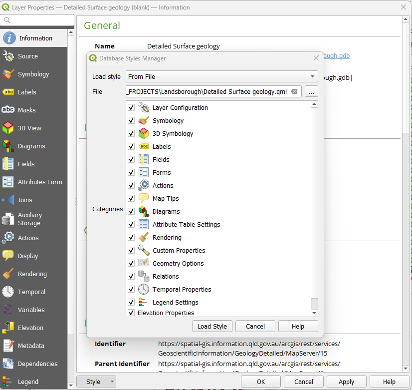
This tool is available only with the SLYR full licence.
Convert LYRX to SLD
| From | To |
|---|---|
| ESRI .lyr/.lyrx | QGIS .sld |
Converts ESRI LYR or LYRX files to the "SLD" format (Styled Layer Descriptor). This feature simplifies the process of sharing and utilizing symbology between different GIS software, allowing for direct conversion of ESRI symbology for use in Geoserver or Mapserver.
- In the QGIS
Processing ToolboxClick onSLYR▶️ArcGIS Pro▶️Convert LYRX to QML. - In the
Input LYRX file, browse to the location of the .lyrx file. -
Under
Destination QML file, set the location of the .qml file. > If more than one layer exists in the lyrx file, a qml will be produced for each > -
Once processed, load the .qml files via the
Layer Properties.
This tool is available only with the SLYR full licence.
Convert MAPX to QGS
| From | To |
|---|---|
| ESRI .mapx | QGIS .qgs |
Converts an MAPX document file to a QGS project file.
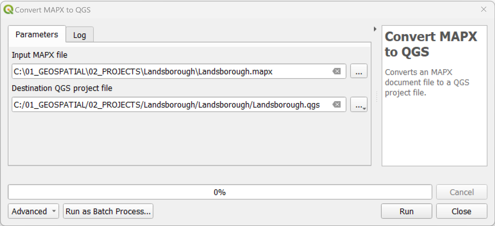
- Save your ArcGIS Pro file then export your map out as a .mapx file.
- In the QGIS
Processing ToolboxClick onSLYR▶️ArcGIS Pro▶️Convert MAPX to QGS. - In the
Input MAPX file, browse to the location of the .mapx file. - Under
Destination QGS project file, set the location of the .qgs file to the same ArcGIS Pro project folder (hint: where the .aprx is stored). > Note due to - Click 'Run'.
-
Open up the .qgs file and check through. >In some cases, labels do not automatically turn on. Note that labelling parameters are saved, it just needs to be manually turned on.
-
Save your project as .qgz if requried.
This tool is available only with the SLYR full licence.
Convert QGIS style XML to STYLX
| From | To |
|---|---|
| QGIS .xml | ESRI .stylx |
Converts a QGIS XML style database to an ArcGIS Pro STYLX database. You will need to create a XML style file. If this has not already been completed, refer to 14.1.1.3 Sharing style items in QGIS documentation. Creating a XML of your styles allows for portability between software and is handy if you have curated a set of styles unique to a project.
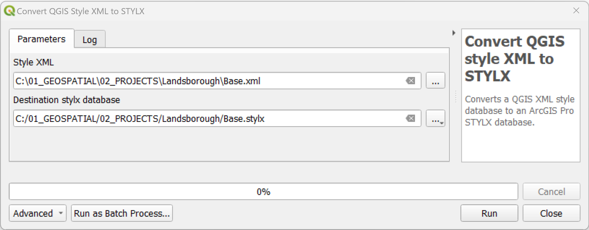
- In the QGIS
Processing ToolboxClick onSLYR▶️ArcGIS Pro▶️Convert QGIS style XML to STYLX. - In the
Style XML, browse to the location of the .xml file. - Under
Destination stylx database, set the location of the .stylx file. - In ArcGIS Pro, in the
Catalogpane, navigate to the style and right mouse click the file to choose where you wish to save the style to.
This tool is available only with the SLYR full licence.
Convert QGIS to MAPX
| From | To |
|---|---|
| QGIS .qgz, qgs | ESRI ArcGIS Pro .mapx |
Converts a QGIS project to a .mapx. A .mapx is an ESRI map file format used in their software ArcGIS Pro. It's function is to enable sharing of maps, recording all the elements drawn in the ArcGIS Pro .aprx.
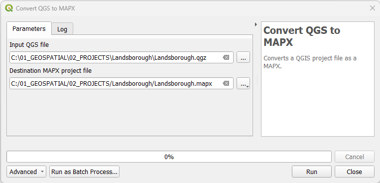
- In the QGIS
Processing ToolboxClick onSLYR▶️ArcGIS Pro▶️Convert QGIS to MAPX. - In the
Input QGIS file, browse to the location of the .qgs or .qgz file. - Under
Destination MAPX project file, set the location of the .mapx file. -
Click
OK. > If errors are returned, read through theLog, rectify the issues and rerun the tool. -
Once processed, in ArcGIS Pro, navigate via the
Catalogand open the .mapx file.
Available only with the SLYR full licence. Can be run as a batch tool
Convert STYLX to GPL color palette
| From | To |
|---|---|
| ESRI .stylx | QGIS .gpl |
Converts an ArcGIS Pro STYLX database to a GPL format color palette file, extracting all color entities saved in the style. GPL color palettes are a file format for GIMP color palettes - GIMP is a cross-platform image editor available for GNU/Linux, macOS, Windows etc and can be added to your QGIS palette options.
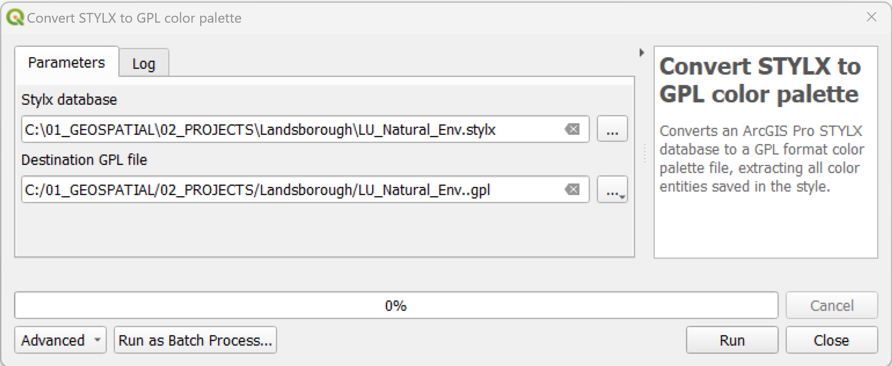
- In the QGIS
Processing ToolboxClick onSLYR▶️ArcGIS Pro▶️Convert STYLX to GPL color palette. - For
Sytlx database, browse to the location of the .stylx file. - Under
Destination GPL file, set the location of the .gpl file. - Click on
Run. - Once converted, import via
Settings▶️Options▶️Colorand ensure you tickShow in Color Buttonsto access it via the color drop-down function inLayer Styling.
In this example, I have added a Landuse - Natural Environment GPL palette.
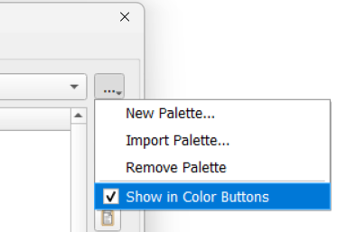 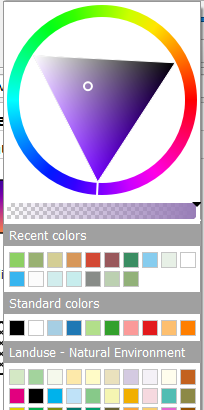
This tool is available only with the SLYR full licence.
Convert STYLX to QGIS style XML
| From | To |
|---|---|
| ESRI .stylx | QGIS .xml |
Converts an ArcGIS Pro STYLX database to a QGIS XML Style library. This is particularly useful if your project has a selection of unique symbols that you wish to continue to use.
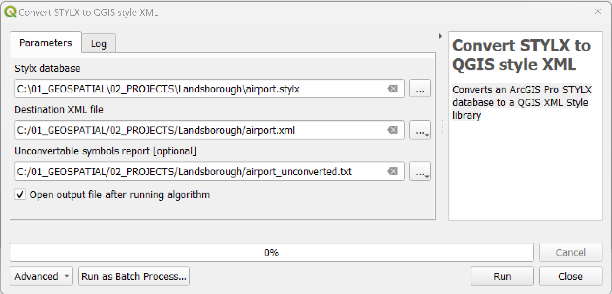
- In the QGIS
Processing ToolboxClick onSLYR▶️ArcGIS Pro▶️Convert STYLX to QGIS style XML. - Under
Stylx database, browse to the location of the .stylx file. - Under
Destination XML file, set the location of the .xml file. - In 'Uncovertable symbols report [optional]`, enter a location for those symbols that fail to convert. This allows you to create a new vector layer containing details of all unconvertable symbols. This report can be saved as any standard vector format, including Shapefile, XLSX or Geopackage.
- Click on
Run. - Once it has converted, you can import the XML file via the
Style Manager▶️Import/Export.
This tool is available only with the SLYR full licence.
Import PAGX print layout
| From | To |
|---|---|
| ESRI .pagx | QGIS .qgs, .qgz |
Imports a PAGX print layout into the current QGIS project.

- In ArcGIS Pro, make sure you save your layout first, then share as a 'Layout file'
- In the QGIS
Processing ToolboxClick onSLYR▶️ArcGIS Pro▶️Imports a PAGX Print Layout. - In the
Input PAGX file, browse to the location of the .pagx file. - Click 'Run'
- Open up the imported print layout from
Project▶️Layouts
This tool is available only with the SLYR full licence.